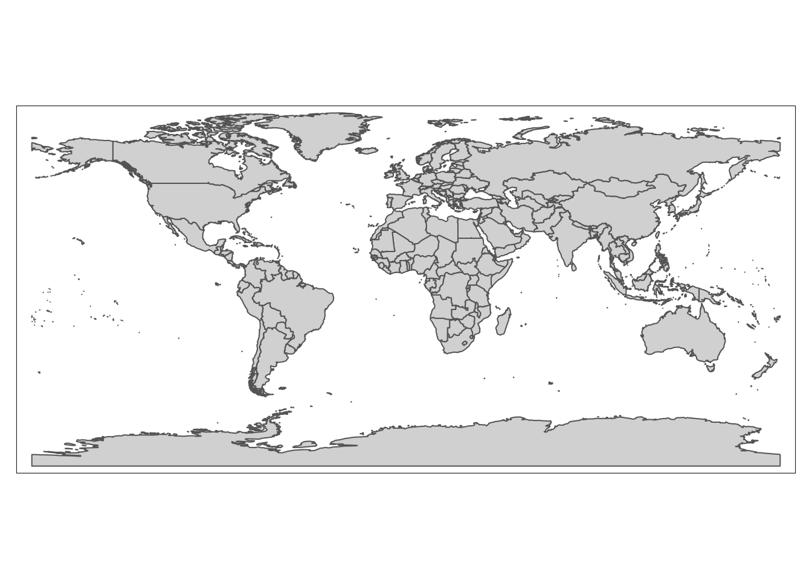

4 Tutorial
4.1 Load and View Data
Now that we’ve taken care of those preliminary steps, let’s bring in the tutorial data into our R environment so that we can begin working with it. There are two pieces of data we’ll need to load:
- The ICPSR tabular dataset on government policy responses to Covid-19 (Section 4.1.1)
- A spatial dataset of world country boundaries; we will bring this dataset into R Studio via the
ne_countriesfunction of the “rnaturalearth” package (Section 4.1.2)
4.1.1 ICPSR Covid-19 Tabular Data
When importing tabular data that you have saved on our computer into R Studio, it’s important to first understand some of the details of the data we’re trying to import. The first thing to note is the type of file we’re working with, which is indicated by the file extension; here, we can note that the ICPSR data is a .xlsx file, which means that it’s an Excel file (but note that .xlsx files can also be opened in spreadsheet software programs other than Excel). That means we’ll have to import it into R Studio using a function designed specifically to handle Excel files. To that end, we’ll use the read_excel function from the readxl package. Recall that if you want to learn more about a function or a package, simply type a question mark followed by the package or function name in the console, and relevant information will appear in the “Help” tab of the “Files/Plots/Packages/Help/Viewer” window on the bottom right of our R Studio interface. For example, if we wanted to learn more about the read_excelfunction, we would type ?read_excel into the console.
Before using the read_excel function to bring in the , it could be helpful to open up the data outside the R environment to see whether the dataset has any features that we have to account for when loading it into our R environment. When we first open the spreadsheet, it will look something like this:
Figure 4.1: ICPSR Dataset in Spreadsheet: Description Tab
Note that when we open the spreadsheet, we land on its first tab (or “sheet”), which is titled “Description”. This part of the spreadsheet effectively functions as a data codebook, which we can look through to understand the dataset’s various variables and and assess how they were measured. To open up the actual dataset, we can toggle to the “Dataset” tab by pressing the corresponding button on the bottom-left of the spreadsheet (highlighted in red below):
Figure 4.2: ICPSR Dataset in Spreadsheet: Dataset Tab
The fact that the ICPSR dataset has two sheets within it is important; it means that when we load it into R, we’ll have to explicitly specify the sheet (i.e. the “Dataset” sheet) we want to import.
Now, let’s go ahead and load the “Dataset” sheet of the ICPSR data file. Type the following code into your script, and run it:
# Imports "Dataset" sheet from ICPSR Excel file into R Studio, and assigns the dataset to an object called "covid_data"
covid_data<-read_excel("Gov_Responses2Covid19_last.xlsx", sheet="Dataset")Let’s unpack that code. As we noted above, read_excel is the function used to bring in Excel spreadsheet data into R. The function has two arguments; the first (“Gov_Responses2Covid19_last.xlsx”) is the name of the file we want to import, while the second (sheet=“Dataset”) specifies that we specifically want to import the the “Dataset” sheet from that Excel file. This code is then assigned, using <- (R’s assignment operator) to a new object that we call covid_data. This means that the output of the code on the right hand side of the assignment operator is now assigned to the covid_data object. Think of this object as a container of sorts, one which holds, or “contains”, the output of the code to the right of the assignment operator. Object assignment isn’t necessary; we could have brought the data into R Studio by simply typing the code to the right of the assignment operator. However, assigning the dataset to an object allows for the more flexible and intuitive handling of data, so it is a common practice.
Note that after typing the code from the previous codeblock into your R script and running it, you still won’t actually see the dataset within the R environment. There are many ways to pull up and inspect the data; in this tutorial, we’ll use the View function, which will bring up the data as a separate tab in the “Source” window. To display the contents of the covid_data object (in other words, the dataset we just imported), type and run the following code:
# Brings up dataset held in the "covid_data" object in R Studio's data viewer
View(covid_data)Within your R Studio environment, the result of running View(covid_data) will look something like this (dataset outlined in red):
Figure 4.3: Viewing ICPSR Dataset in R Environment
You can scroll up/down and across the dataset within the data viewer.
4.1.2 Country Boundaries Spatial Data
Now that we have our tabular data on government responses to Covid-19 loaded into R Studio, let’s bring spatial data on world country borders into memory. Eventually, we’ll represent the Covid-19 data on a map by joining it to the spatial data on country boundaries that we will now bring in.
When working with spatial data in R, you will sometimes want to import data that you collected on your own, or data that you downloaded. There are several functions in the sf package that will allow you to easily import your external spatial data in R; if you need to do this, you should consult the package’s documentation.
In our case, we won’t have to download and import the spatial data we need into R Studio, since there are R packages that already contain this spatial data. In particular, we’ll use the ne_countries function of the rnaturalearth package to bring the country border dataset into our R environment. Note the two arguments we pass into the ne_countries function: the “scale” argument specifies that we want to use a medium scale when rendering the map (the other options are ‘small’ and ‘large’), while the “returnclass” argument specifies that we want the spatial dataset in ‘sf’ format, which is a spatial data format that works well with the tmap mapping package we’ll use later. As in the previous section, we’ll assign the dataset to an object so that we can easily work with it later; we’ll call this object “country_boundaries”:
country_boundaries<-ne_countries(scale="medium", returnclass="sf")Now that the spatial layer of country boundaries is in our R environment, let’s go ahead and open it up. A spatial dataset consists of features and attributes. Features are represented visually, and use geometric shapes shapes (such as lines, points, or polygons) to represent real-world phenomena in a way that corresponds to their spatial locations. An attribute refers to information about a given feature; attributes for a spatial dataset are usually presented in a table, where each row corresponds to a given feature, and columns represent various attributes.
Let’s first open up the features, and examine the dataset’s visual representation. To do so, we’ll have to use a mapping package called tmap. To bring up the features of the dataset, we have to first tell tmap what data we want to map; we do this by first passing the name of the object that contains the dataset (here, “country_boundaries”) to the tm_shape function, and then specifying that our features (i.e. country borders) are represented as polygons through the tm_polygons function. The tm_polygons function does not require any arguments. In the tmap package, we can connect functions together through a plus sign (+). When we type in and run the following code, the result is a visual representation of the dataset contained in the “country_boundaries” object we defined above, i.e. a political map of the world:
tm_shape(country_boundaries)+
tm_polygons()